Java虚拟机
2.内存管理 / 垃圾回收
2.1概述
Java与C语言相比的一个优势是，可以通过自己的JVM自动分配和回收内存空间。垃圾回收机制是由垃圾收集器Garbage Collection来实现的，GC是后台一个低优先级的守护进程。在内存中低到一定限度时才会自动运行，因此垃圾回收的时间是不确定的。
为何要这样设计：因为GC也要消耗CPU等资源，如果GC执行过于频繁会对Java的程序的执行产生较大的影响，因此实行不定期的GC。
与GC有关的是：JVM运行时数据区中的堆（对象实例会存储在这里）和 gabage collector方法。垃圾回收GC只能回收通过new关键字申请的内存（在堆上），但是堆上的内存并不完全是通过new申请分配的。还有一些本地方法，这些内存如果不手动释放，就会导致内存泄露，所以需要在finalize中用本地方法(native method)如free操作等，再使用gc方法。
2.2两次标记
要真正宣告一个对象死亡，至少需要经历两次标记过程。
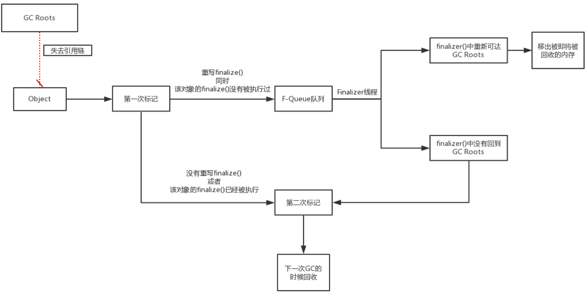
- Finalizer线程由JVM自动创建，优先级很低
- Finalizer线程不保证等待finalize()方法结束，避免方法中存在死循环或执行缓慢，致使队列中其他对象永久等待，内存回收系统崩溃
- finalize()方法运行代价高昂，建议使用try..catch..代替
2.3引用的状态：强软弱虚
可达性分析判断对象的引用链是否可达，即对象是否存活与引用有关
JDK1.2以前
- reference类型的数据中存储的数值代表的是否是另外块内存的起始地址
- 只有引用 & 没被引用 两种状态
JDK1.2以后：对引用进行扩充为四种
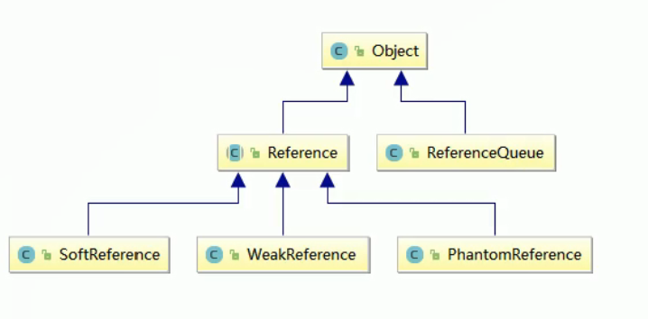
引用队列
- 被引用对象被回收前，
***Reference对象加入引用队列
- 被引用对象被回收前，
强引用
1
2
3
4
5
6
7
8
9Object obj1 = new Object(); //java.lang.Object@74a14482有一个强引用
Object obj2 = obj1; //java.lang.Object@74a14482有两个强引用
obj1 = null;
System.gc();
System.out.println(obj2); //还有一个强引用 所以没有被GC
/*
java.lang.Object@74a14482
*/- 最常见的普通对象引用，把一个对象赋给一个引用变量，这个引用变量就是一个强引用，当一个对象被即使一个强引用对象引用时，标明对象还”活着”，就不会回收
- 就算是出现了OOM也不会对该对象进行回收，崩盘也不回收
- 一个普通对象，如果没有其他的引用关系，只要超过了引用的作用域或者显式的将响应的强引用设置为null，则认为可以被GC
- 内存泄露的主要原因之一
软引用
1
2
3
4
5
6
7
8
9
10
11
12
13
14
15
16
17
18
19
20
21/*
* 程序：内存空间够用 保留
*/
Object o1 = new Object(); //java.lang.Object@74a14482有一个强引用
//java.lang.Object@74a14482有一个强引用 + 一个软引用
SoftReference<Object> softReference = new SoftReference<>(o1);
System.out.println(o1);
System.out.println(softReference.get());
o1 = null; //置空 java.lang.Object@74a14482只剩一个软引用
System.gc();
System.out.println(o1); // 置空故为null
System.out.println(softReference.get()); //内存空间富裕 则保留
/*
java.lang.Object@74a14482
java.lang.Object@74a14482
null
java.lang.Object@74a14482
*/1
2
3
4
5
6
7
8
9
10
11
12
13
14
15
16
17
18
19
20
21
22
23
24
25
26
27
28
29
30
31
32/*
* 程序：内存空间不够用
* JVM配置：-Xms5m -Xmx5m -XX:+PrintGCDetails
* 故意产生大对象【30M】并配置小内存【5M】，倒置OOM，查看软引用的回收情况
*/
Object o1 = new Object(); //java.lang.Object@74a14482有一个强引用
//java.lang.Object@74a14482有一个强引用 + 一个软引用
SoftReference<Object> softReference = new SoftReference<>(o1);
System.out.println(o1);
System.out.println(softReference.get());
o1 = null; //置空 java.lang.Object@74a14482只剩一个软引用
try{
// 在总共5M的内存分配 30M强引用 触发垃圾回收
byte[] bytes = new byte[30 * 1024 * 1024];
}catch (Throwable e)
{
e.printStackTrace();
}finally {
System.out.println(o1);
System.out.println(softReference.get());//内存空间不足 被软引用的对象被回收
}
/*
java.lang.Object@74a14482
java.lang.Object@74a14482
java.lang.OutOfMemoryError: Java heap space
at Main.main(test.java:28)
null
null
*/用来描述还有用但是非必须的对象【可以做内存敏感的高速缓存】
如果内存空间足够，垃圾回收器就不会回收它，如果内存空间不足了，就会回收这些对象的内存
在系统将要发生OOM异常之前，将会把这些对象范围内的进行二次回收，如果还没有足够内存，抛出OOM异常
应用：读取本地大量图片——分次读影响性能，一次读取容易OOM
1
2
3
4
5
6
7
8
9
10
11
12
13
14
15
16
17
18
19
20
21
22
23
24
25
26
27
28
29
30
31
32
33
34
35
36
37
38
39
40
41
42
43
44
45
46
47
48
49
50
51/**
* SoftRefenceCache
* @param <K> key的类型.
* @param <V> value的类型.
*/
class SoftReferenceCache<K, V> {
private final HashMap<K, SoftReference<V>> mCache;
public SoftReferenceCache() {
mCache = new HashMap<K, SoftReference<V>>();
}
/**
* 将对象放进缓存中，这个对象可以在GC发生时被回收
*
* @param key key的值.
* @param value value的值型.
*/
public void put(K key, V value) {
mCache.put(key, new SoftReference<V>(value));
}
/**
* 从缓存中获取value
* @param key
* @return 如果找到的话返回value，如果被回收或者压根儿没有就返回null
*/
public V get(K key) {
V value = null;
SoftReference<V> reference = mCache.get(key);
if (reference != null) {
value = reference.get();
}
return value;
}
}
class Main
{
public static void main(String[] args) throws Exception {
SoftReferenceCache<Integer, Person> mPersonCache = new SoftReferenceCache<>();
mPersonCache.put(0, new Person("Peter"));
mPersonCache.put(1, new Person("Jan"));
mPersonCache.put(2, new Person("Kees"));
// 去拿Jan
Person p = (Person) mPersonCache.get(1);
System.out.println(p.name);
}
}
弱引用
1
2
3
4
5
6
7
8
9
10
11
12
13
14
15
16Object o1 = new Object(); //java.lang.Object@74a14482有一个强引用
//java.lang.Object@74a14482有一个强引用 + 一个弱引用
WeakReference<Object> weakReference = new WeakReference<>(o1);
System.out.println(o1);
System.out.println(weakReference.get());
o1 = null; //置空 java.lang.Object@74a14482只剩一个弱引用
System.gc();
System.out.println(o1); // 置空故为null
System.out.println(weakReference.get()); // null 弱引用一定被回收
/*
java.lang.Object@74a14482
java.lang.Object@74a14482
null
null
*/垃圾回收器一旦发现了弱引用的对象，不管当前内存空间足够与否，都会回收它的内存
不过由于垃圾回收器是一个优先级很低的线程，因此不一定会很快发现那些弱引用的对象
WeakHashMap
1
2
3
4
5
6
7
8
9
10
11
12WeakHashMap<Integer,String> map = new WeakHashMap<>();
Integer value = new Integer(3);
String str = new String("weakHashMap");
map.put(value, str);
System.out.println(map); // {3=weakHashMap}
value = null;
System.out.println(map); // {3=weakHashMap}
System.gc();
System.out.println(map); // {}
System.out.println(map.size()); // 0
虚引用
1
2
3
4
5
6
7
8
9
10
11
12
13
14
15
16
17
18
19
20
21
22
23
24
25
26
27
28Object o1 = new Object();
// 创建引用队列
ReferenceQueue<Object> referenceQueue = new ReferenceQueue<>();
//java.lang.Object@74a14482有一个强引用 + 一个虚引用
PhantomReference<Object> phantomReference = new PhantomReference<>(o1, referenceQueue);
System.out.println(o1);
System.out.println(phantomReference.get()); // 不管gc 虚引用永远返回null
System.out.println(referenceQueue.poll()); // 没有gc 为null
System.out.println("=====================");
o1 = null;
System.gc();
Thread.sleep(500);
System.out.println(o1);
System.out.println(phantomReference.get()); // 虚引用永远返回null
System.out.println(referenceQueue.poll()); // 对象被回收到队列中
/*
java.lang.Object@74a14482
null
null
=====================
null
null
java.lang.ref.PhantomReference@7ea987ac
*/
* 一个对象是否有虚引用的存在，完全不会对其生命时间构成影响
* 如果一个对象被虚引用，那么它就和没有引用一样，在任何时候都可能被垃圾回收器回收
* 必须和引用队列（ReferenceQueue）联合使用
* 每次调用get方法，返回值总是null
* **虚引用主要用来跟踪对象被垃圾回收的活动**。
* **直接内存使用时，使用到了虚引用**：在直接内存回首时，虚引用对象进入引用队列中，`RefferenceHandler`在队列中寻找到虚引用Cleaner调用Unsafe.freeMemory()方法释放直接内存；释放引用。

* 目的：允许使用finalize()方法在垃圾收集器将对象从内存中清除出去前做必要的清理工作，可以收到一个系统通知
* 虚引用必须和引用队列（ReferenceQueue）联合使用。当垃圾回收器准备回收一个对象时，如果发现它还有虚引用，就会在回收对象的内存之前，把这个虚引用加入到与之关联的引用队列中。程序可以通过判断引用队列中是否已经加入了虚引用，来了解被引用的对象是否将要被垃圾回收。程序如果发现某个虚引用已经被加入到引用队列，那么就可以在所引用的对象的内存被回收之前采取必要的行动。2.4垃圾回收算法
2.4.1引用计数法
- 给对象添加一个引用计数器，每当有一个地方引用它则计数器+1，引用失效-1
- 算法目前没人使用，无法解决循环引用问题
2.4.2可达性分析法
Java中那些不可达的对象就会变成垃圾。
对象之间的引用可以抽象为树结构，通过树根（GC Roots）遍历，搜索走过的链成为引用链。当一个对象到GC Roots没有任何引用链相连时，则证明这个对象为可回收的对象。
可以作为GC Roots的主要有以下几种：
- 栈帧中的本地变量表所引用的对象
- 方法区中类静态属性和常量引用的对象
- 本地方法栈中JNI（Native方法）引用的对象
1
2
3
4
5
6private static GCRootDemo2 t1 = new GCRootDemo1();
private final GCRootDemo2 t2 = new GCRootDemo2() ;
public void m()
{
GCRootDemo t3 = new GCRootDemo3();
}MAT：eclipse提供的分析Java堆对象的分析工具

实例：
1 | //1.改变对象的引用，如置为null或者指向其他对象 |
2.4.2.1Copying（复制）算法【新生代】
将可用内存按容量划分为大小相等的两块，每次只使用其中的一块。当这一块的内存用完了，就将还存活着的对象复制到另外一块上面，然后再把第一块内存上的空间一次清理掉
- 优点：不容易出现内存碎片的问题，并且运行高效
- 缺点
- 能够使用的内存缩减到原来的一半，太过浪费
- 效率跟存活对象的数目多少有很大的关系，如果存活对象很多，那么Copying算法的效率将会大大降低
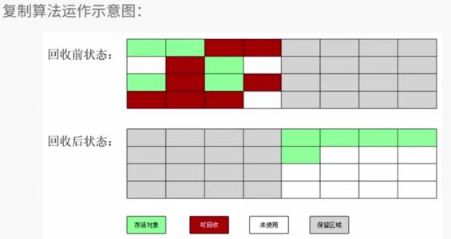
2.4.2.2Mark-Sweep（标记-清除）算法【老年代】
标记阶段的任务是标记出所有需要被回收的对象
清除阶段就是回收被标记的对象所占用的空间
缺点
- 产生大量不连续的内存碎片。当之后需要为大内存分配空间时，可能导致无法找到足够的内存再次GC
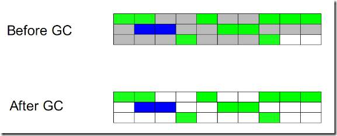
2.4.2.3Mark-Compact（标记-整理）算法【老年代】
标记阶段标记出所有需要被回收的对象，但是在完成标记之后不是直接清理可回收对象，而是将存活的对象都移向一端，然后清理掉端边界以外的所有内存（只留下存活对象）
2.4.2.4Generational Collection（分代收集）算法
核心思想是将堆区划分为老年代（Tenured Generation）和新生代（Young Generation），在不同代的采取不同的最适合的收集算法。
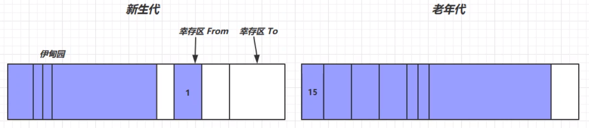
新生代的特点是每次垃圾回收时都有大量的对象需要被回收
- 采取复制算法
- 划分为一块较大的Eden空间和两块较小的Survivor空间（默认比例8：1：1）
- 每次使用Eden空间和一块Survivor From空间，当进行回收时，将还存活的对象复制到Survivor To空间中，然后清理掉Eden和Survivor From空间
- 反复循环
- 当对象在Survivor区躲过一次GC的话，其对象年龄便会加1，默认情况下，对象年龄达到15时（最大寿命是4bit），就会移动到老年代中
- 大对象会被直接分配到老年代，所谓的大对象是指需要大量连续存储空间的对象，最常见的一种大对象就是大数组，比如：
byte[] data = new byte[4*1024*1024] - Minor GC是新生代Copying算法
- 触发条件：Eden区满
- Minor GC会引发Stp The World，暂停其它用户的线程，等垃圾回收结束,用户线程才恢复运行
老年代的特点是每次垃圾收集时只有少量对象需要被回收
- 无额外空间对其进行分配担保
- 标记整理算法
当老年代空间不足，会先尝试触发Minor GC，如果之后空间仍不足，那么触发Full GC, STW的时间更长
- Full GC的老年代，采取的标记-整理。Full GC触发条件：
- 调用System.gc时，系统建议执行Full GC，但是不必然执行
- 老年代空间不足
- 方法区空间不足
- 过Minor GC后进入老年代的平均大小大于老年代的可用内存
- Full GC的老年代，采取的标记-整理。Full GC触发条件：
2.5垃圾收集器参数设置
-XX:+UseConcMarkSweepGC
- 使用CMS收集器
XX:+UseParallelGC
- 使用并行收集器
XX:+UseParallelOldGC
- 使用并行老年代收集器
垃圾回收统计信息
- -XX:+ PrintGC
- -XX:+ PrintGCDetails
- 打印GC的细节
- -XX: +PrintGCTimeStamps
- 打印GC操作的时间戳
- -Xloggc:filename
-XX:ParallelGCThreads=n
- 设置并行收集器收集时使用的CPU数。并行收集线程数。
-XX:MaxGCPauseMillis=n
- 设置并行收集最大暂停时间
-XX:GCTimeRatio=n
- 设置垃圾回收时间占程序运行时间的百分比。公式为1/(1 +n)
-XX: +CMSIncrementalMode
- 设置为增量模式。适用于单CPU情况。
-XX:-DisableExplicitGC
- 让System.gc()不产生任何作用
- -XX:PrintTenuringDistribution
- 设置每次新生代GC后输出幸存者乐园中对象年龄的分布
- -XX:InitialTenuringThreshold / -XX:MaxTenuringThreshold
- 设置老年代阀值的初始值和最大值
- -XX:TargetSurvivorRatio
- 设置幸存区的目标使用率
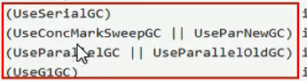
2.6典型垃圾回收器【7种】
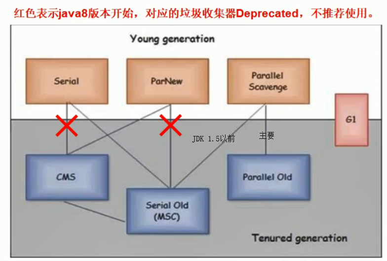
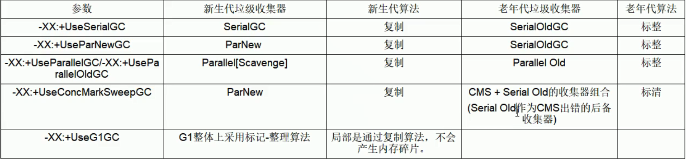
- JVM有两种运行模式Server与Client
- Client模式
- 启动速度较快
- 轻量级的虚拟机
- Server模式
- 启动较慢
- 采用的是重量级的虚拟机 程序采用了更多的优化
- 动进入稳定期长期运行之后Server模式的程序运行速度比Client要快很多
- Client模式
- 总体分类
- 串行
- 单线程
- 堆内存较小，适用于个人电脑
- 吞吐量优先【程序运行100分钟，垃圾收集时间1分钟，吞吐量就是99%】（运行用户代码时间/(运行用户代码时间+垃圾收集时间)）
- 多线程
- 堆内存大，多核cpu
- 单位时间内STW时间最小 0.2+0.2 = 0.4
- 响应时间优先
- 多线程
- 堆内存大，多核cpu
- 尽可能STW单次时间减小 0.1+0.1+0.1+0.1+0.1=0.5
- 串行
2.6.1串行垃圾回收器（Serial【新生代】 & Serial Old【老年代】）
- 一个单线程收集器，并且在它进行垃圾收集时，必须暂停所有用户线程
- 不适合服务器环境，适合Client模式，需要管理的内存较小，停顿时间可以接受
- 在单CPU环境下，避免线程交互的开销可以获得最高的单线程垃圾收集效率
1 | 开启后使用组合：Serial收集器【新生代 复制算法】 + Serial Old收集器【老年代 标记整理算法】 |
- Serial收集器是针对新生代的收集器，采用的是Copying算法
- Serial Old【已废弃】收集器是针对老年代的收集器，采用的是Mark-Compact算法 现在主要与CMS配合
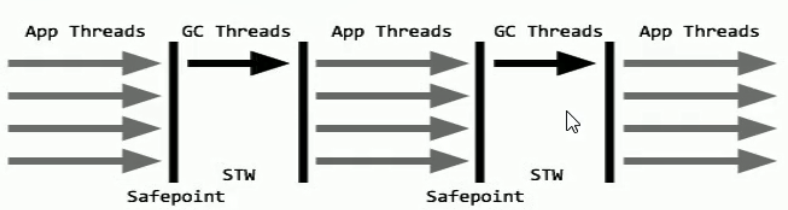
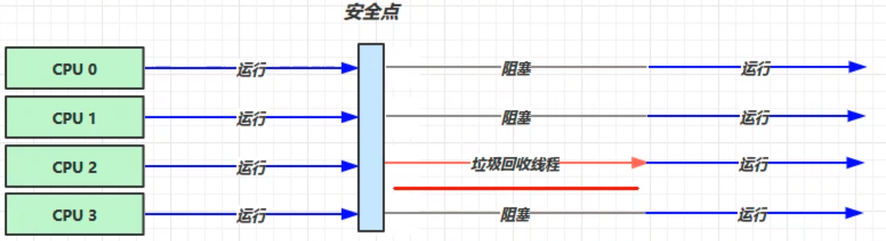
2.6.2并行垃圾回收器（ParNew【新生代】）
使用多个线程进行垃圾收集，在垃圾收集时会Stop-The-World暂停其他所有的工作直到收集结束
ew收集器是Serial收集器的多线程版本
1
2开启后： ParNew(新生代) + Serial Old(老年代)【deprecatd】
-XX:+UseParNewGCParNew收集器是针对新生代的收集器，采用的是复制算法
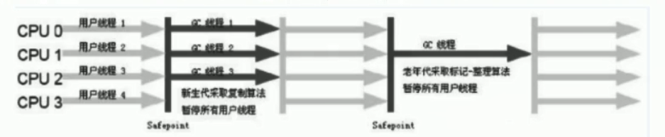
2.6.3并行垃圾回收器（Parallel Scavenge【新生代】）
JDK1.8默认收集器，可控制的吞吐量，高吞吐量意味着高效利用CPU的时间，它多用于在后台运算而不需要太多交互的任务
一个新生代的多线程收集器，采用Copying算法
关注重点
-XX:+UseAdaptiveSizePolicy：系统会根据系统运行情况修改新生代大小(-Xmn)以及Eden和Survivor比例(-XX:SurvivorRatio)，晋升老年代对象年龄(-XX:PretenureSizeThreshold)等参数来提供最合适的停顿时间和最大吞吐量。自适应调节策略
MaxGCPauseMillis：设置回收停顿的最大时间。收集器尽可能将垃圾回收消耗时间保持在这个数值之下，但是并不是把这个数设置越小，垃圾收集就越快。- 停顿时间减少是以牺牲吞吐量和新生代空间换来的，系统会将新生代内存降低，来达到每次回收停顿时间缩小，但是这也导致了停顿次数增加，总停顿时间并没有减少，吞吐量减小。
GCTimeRatio：设置一个1-99的整数，1/(1+X)设置垃圾回收时间占总时间的比率（吞吐量），整数设置越大，吞吐量越大- 整数设置越大相当于停顿时间减少，系统会减少新生代内存，导致停顿增加，吞吐量减小。
- 这两个参数不可一味的增加某一个，他们互相制约，寻找一个平衡。
XX:ParallelGCThreads=n：并发线程数1
2
3
4开启后使用组合： Parallel Scavenge【新生代 复制算法】+ Parallel Old【老年代 标记整理算法】
开启一个另一个自动开启
-XX:+UseParallelGC
-XX:+UseParallelOldGC
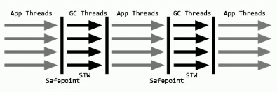
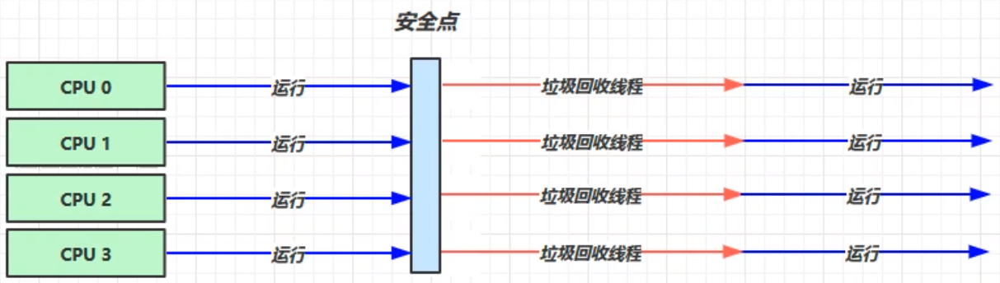
- 总结
对于不是很了解收集器运作的开发人员来说，ParallelGC是个更好的选择。事先设置好堆大小-Xmx，然后设置MaxGCPauseMillis（重视停顿时间）或者GCTimeRatio（重视吞吐量）；设置完优化目标，剩下的具体参数修改交给系统自己。
这也是ParallelGC和ParNew一个重要的区别
2.6.4并行垃圾回收器（Parallel Old【老年代】）
Parallel Old是Parallel Scavenge收集器的老年代版本（并行收集器）- 使用多线程和
Mark-Compact算法 - 提供在老年代的吞吐量优先的垃圾收集器
1 | 开启后使用组合： Parallel Scavenge【新生代】+ Parallel Old【老年代】 |
2.6.5并发垃圾回收期（CMS【老年代】）
以获取最短回收停顿时间为目标的收集器，采用标记-清除算法
只有初始标记和并发标记会发生STW，所以相应时间比较短
适合对响应时间有要求的场景，适合应用在互联网站或者B/S系统的服务器
尤其重视服务器的响应速度，希望系统停顿时间最短。
CMS非常适合堆内存大、CPU核数多的服务器端应用，也是G1出现之前大型应用的首选收集器。
1
2
3
4开启后使用组合： ParNew(年轻代) + CMS(老年代) + Serial Old的收集器组合(CMS出错的后备收集器)
-XX:+UseConcMarkSweepGC
自动将打开
-XX:+UseParNewGC
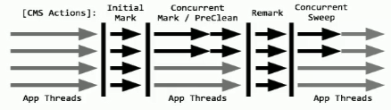
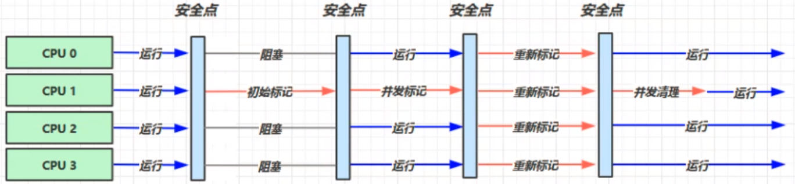
初始标记(CMS initial mark) 【STP】
- 只是标记一下GC Roots能直接关联的对象，速度很快，仍然需要暂停所有的工作线程
并发标记(CMS concurrent mark)和用户线程一起【耗时】
- 从第一步标记的对象出发，和用户线程一起工作，不需要暂停工作线程。 主要标记过程，标记全部对象
重新标记(CMS remark) 【STP】
-XX:+ScavengeBeforeFullGC：为了修正在并发标记期间，因用户程序继续运行而导致标记产生变动的对象和新创建的对象的标记，仍然需要暂停所有的工作线程。由于并发标记时，用户线程依然运行，因此在正式清理前，再做修正。
重新标记需要全量扫描整个堆大小（存在年轻代关联老年代的引用,所以需要扫描整个堆）
并发清除(CMS concurrent sweep)和用户线程一起【耗时】
- 清除GC Roots不可达对象，和用户线程一起工作，不需要暂停工作线程。基于标记结果，直接清理对象
- 缺点：
- 采用的标记清除算法会导致大量碎片
- 标记清除算法无法整理空间碎片，老年代空间会随着应用时长被逐步耗尽，最后将不得不通过担保机制对堆内存进行压缩。CMS也提供了参数-XX:CMSFullGCsBeForeCompaction(默认0，即每次都进行内存整理)来指定多少次CMS收集之后，进行一次压缩的Full GC。
- 无法处理浮动垃圾，由于并发进行，CMS在收集与应用线程会同时会增加对堆内存的占用，CMS必须要在老年代堆内存用尽之前完成垃圾回收，否则CMS回收失败时，将触发担保机制，串行老年代收集器将会以STW的方式进行一次GC,从而造成较大停顿时间
- 并发执行CPU压力大
- 采用的标记清除算法会导致大量碎片
-XX:ParallelGCThread=n：并行线程数，一般为cpu核心数-XX:ConcGCThreads=threads：一般设置为n/4，并发垃圾回收线程数。-XX:CMSInitiatingOccupancyFraction=percent：达到比例就会出发老年代垃圾回收- jdk1.6将这一值从1.5中的68改为92，为了防止频繁的触发老年代垃圾回收；
- 为什么要设置这一比例？
- 因为在并发垃圾清理的同时，其它用户线程也在运行，产生的浮动垃圾CMS当前批次中难以处理，只能留到下次GC；也正是因为如此，所以需要留下空间给用户线程运行所产生的对象使用。
- 如何设置最好？
- 在内存无法满足运行需要时，会出现
Concurrent Mode Failure失败，VM会使用Serial Old代替CMS对老年代中垃圾对象进行整理，停顿时间更长，比例设置过高，更加容易触发Concurrent Mode Failure失败，影响性能（Serial Old暂停所有用户线程防止产生更多的对象，同时可以清理内存碎片）
- 在内存无法满足运行需要时，会出现
2.6.6G1
设计目标是取代CMS收集器，JDK1.9默认
- 整体上采用标记整理算法，局部是通过复制算法，不会产生内存碎片。
- 同时注重吞吐量(Throughput) 和低延迟(Low latency)，默认的暂停目标是200 ms .
- Stop The World(STW)更可控，G1 在停顿时间上添加了预测机制，用户可以指定期望停顿时间
- 宏观上看G1之中不再区分年轻代和老年代。把内存划分成多个独立的子区域(Region)
- G1收集器里面讲整个的内存区都混合在一起了，但其本身依然在小范围内要进行年轻代和老年代的区分，保留了新生代和老年代，但它们不再是物理隔离的，而是一部分Region的集合且不需要Region是连续的，也就是说依然会采用不同的GC方式来处理不同的区域。
G1虽然也是分代收集器，但整个内存分区不存在物理上的年轻代与老年代的区别，也不需要完全独立的survivor(to space)堆做复制准备。G1只有逻辑上的分代概念，或者说每个分区都可能随G1的运行在不同代之间前后切换
面向服务端应用的收集器，充分利用多CPU、多核环境，尽量缩短STW
核心思想
- 适合超大堆内存，将整个堆内存区域分成大小相同的子区域(Regjon)， 在JVM启动时会自动设置这些子区域的大小
1
2
3
4
5
6
7
8
9
10
11
12
13开启G1
-XX:+UseG1GC
指定分区大小(1MB~32MB，且必须是2的幂) 默认将整堆划分为2048个分区
最大内存为: 32MB * 2048 = 65536MB = 64G内存
XX:G1HeapRegionSize=n
最大GC停顿时间，这是个软目标，JVM将尽可能(但不保证)停顿小于这个时间，
Xx:MaxGCPauseMillis=n:
堆占用了多少的时候就触发GC，默认为45
-X:InititingHeapOccupancyPercent=n
并发Gc使用的线程数
-XX:ConcGCThreads=n
设置作为空闲空间的预留内存百分比，以降低目标空间溢出的风险，默认值是10%
-XX:G1 ReservePercent=n
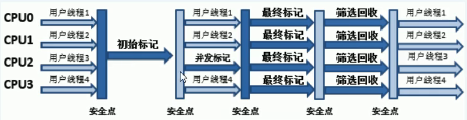
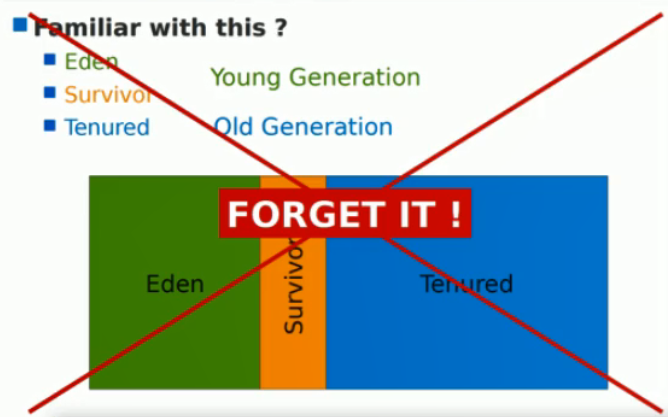
G1垃圾回收阶段
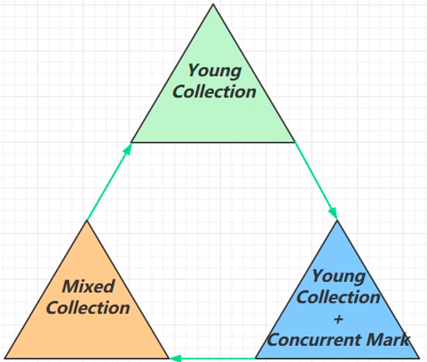
Young Collection
- 会存在STP
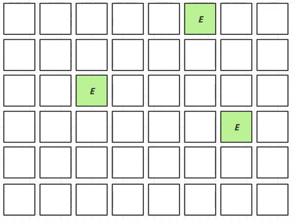
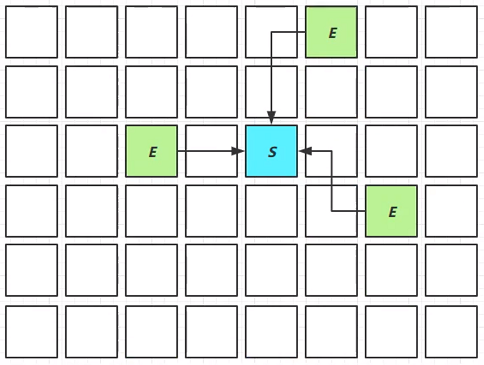
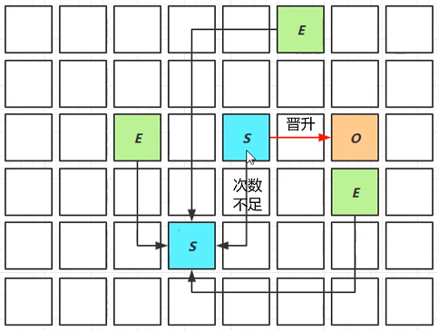
Young Collection + CM
在Young GC时会进行GC Root的初始标记
老年代占用堆空间比例达到阈值时，进行并发标记（不会STW） ，由下面的JVM参数决定
-XX: InitiatingHeapOccupancyPercent=percent (默认45%)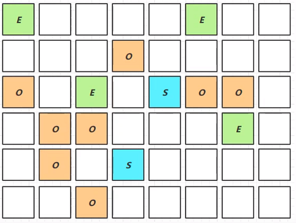
Mixed Collection
会对E、S、O进行全面垃圾回收
- 最终标记(Remark) 会STW
- 拷贝存活(Evacuation) 会STW
- 在老年代来讲，会优先回收垃圾较多的区域
- XX : MaxGCPauseMillis=ms
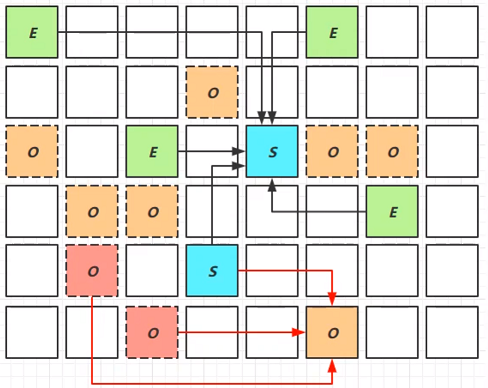
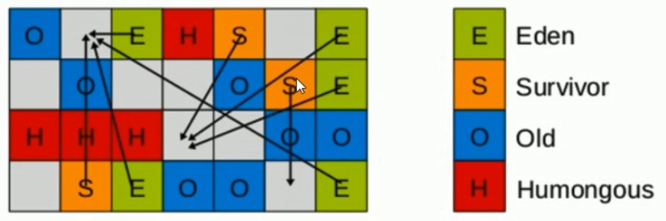
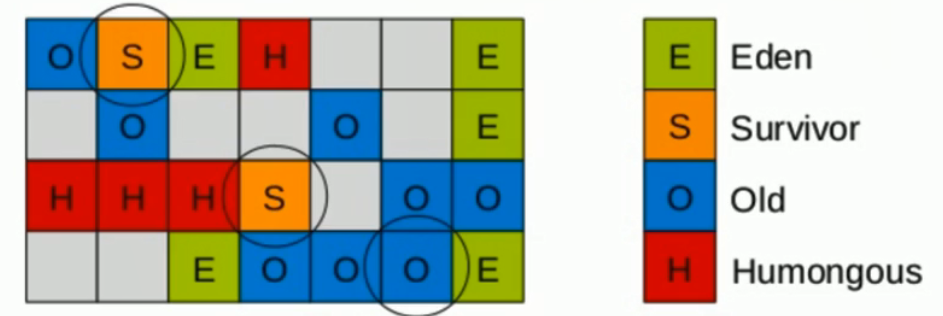
Young Collection跨代引用
新生代回收的跨代引用(老年代引用新生代)问题
- 直接在脏卡区遍历GCRoot，减少编译时间
- 卡表与Remembered Set
- 在引用变更时通过post -write barrier + dirty card queue
- concurrent refinement threads更新Remembered Set
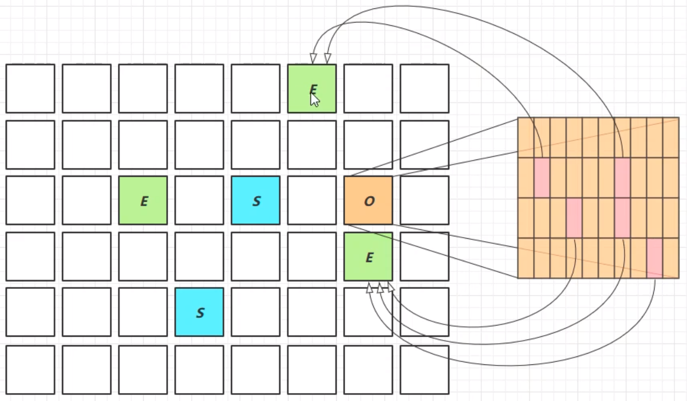
JDK 8u20字符串去重
优点：节省大量内存
缺点：略微多占用了cpu时间，新生代回收时间略微增加
1
-XX: +UseStringDeduplication
1
2String s1 = new String("hello"); // char[]{'h','e','l','l','o'}
String s2 = new String("hello"); // char[]{'h','e','l','l','o'}将所有新分配的字符串放入一个队列
- 当新生代回收时，G1并发检查是否有字符串重复
- 如果它们值一样，让它们引用同一个char[]
- 与String.intern()不一样
- String.intern()关注的是字符串对象，而字符串去重关注的是char[]
- 在JVM内部，使用了不同的字符串表
2.7G1 & CMS对比
G1 不会产生内存碎片
G1是可以精确控制停顿。收集器是把整个堆(新生代、老生代)划分成多个固定大小的区域，每次根据允许停顿的时间去收集垃圾最多的区域
2.8GC选择
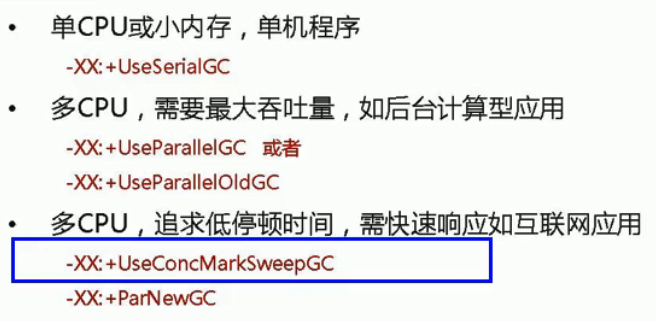
参数
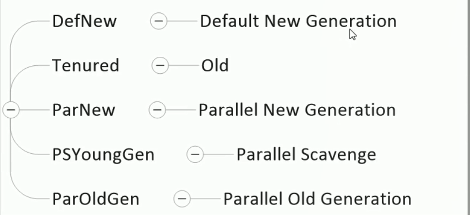
2.9Full GC
- SerialGC
- 新生代内存不足发生的垃圾收集- minor gc
- 老年代内存不足发生的垃圾收集- full gc
- ParallelGC
- 新生代内存不足发生的垃圾收集
-minor gc - 老年代内存不足发生的垃圾收集
-full gc
- 新生代内存不足发生的垃圾收集
- CMS
- 新生代内存不足发生的垃圾收集- minor gc
- 老年代内存不足
- G1
- 新生代内存不足发生的垃圾收集- minor gc
- 老年代内存不足
CMS G1老年代内存不足分两种情况
- 回收速度比新产生的垃圾速度快，不会触发
-full gc暂停时间比较短- 回收速度比新产生的垃圾速度慢，触发
-full gcCMS可能退化为串行收集 暂停时间比较长- 根据GC日志判断是否发生
-full gc
2.10重新标记Remark阶段
pre-write barrier+ satb_mark_queue
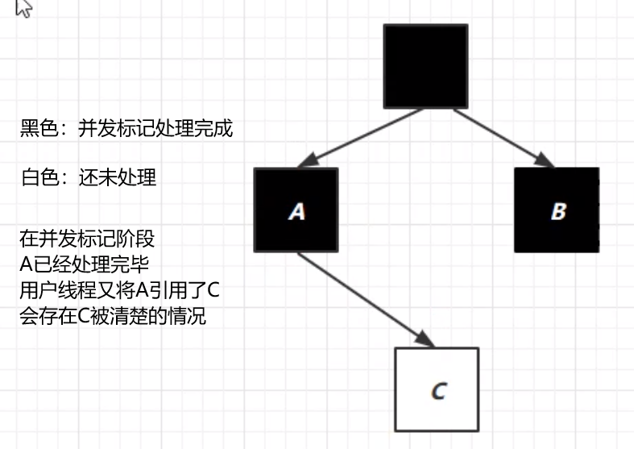
重新标记阶段解决此问题
- 对象的引用发生改变，则加入写屏障
- 写屏障使得C加入到一个队列当中，C变为未处理情况
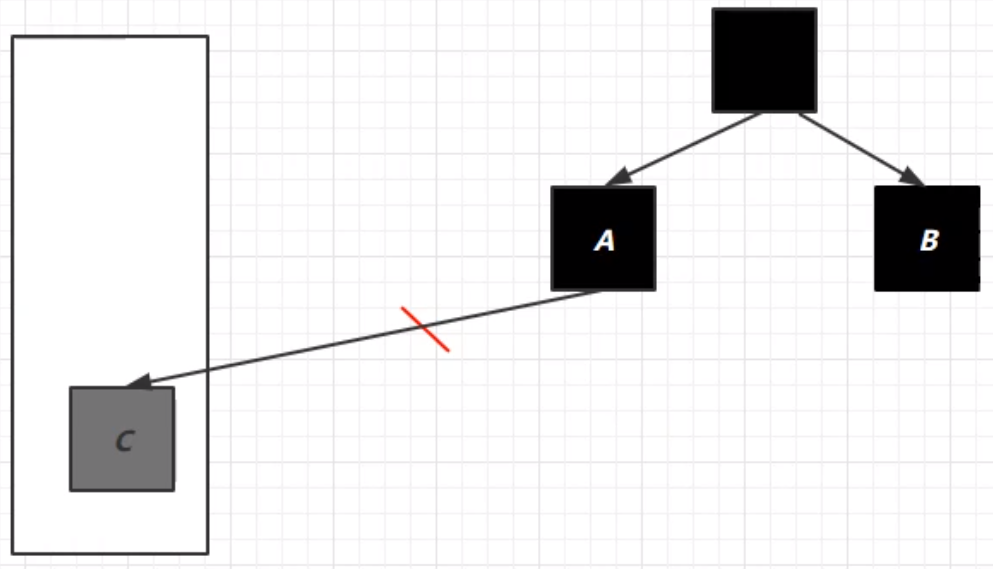
2.11GC调优
- 调优跟应用、环境有关，没有放之四海而皆准的法则
- 查看虚拟机GC运行参数
java -XX: +PrintFlagsFinal -version | findstr "GC"
2.11.1调优领域
- 内存
- 锁竞争
- cpu占用
- IO
2.11.2确定目标
- 根据目标，选择合适的回收器
- 【吞吐量优先】：ParallelGC
- 【相应时间优先】：CMS，G1, ZGC【JDK12】
2.11.3最快的GC是不发生GC
- 查看FullGC前后的内存占用，是否是自己程序的问题
- 数据是不是太多?
- resultSet = statement.executeQuery(“select * from 大表 limit n“)
- 数据表示是否太臃肿
- 查询属性过多
- 对象大小
- 是否存在内存泄漏
- 使用 软弱引用/Redis 优化
- 数据是不是太多?
2.11.4新生代调优
新生代的特点
- 所有的new操作的内存分配非常廉价
- 伊甸园中每个线程都有TLAB（thread-local allocation buffer），防止线程安全问题
- 死亡对象的回收代价是零
- 大部分对象用过即死
- Minor GC的时间远远低于Full GC
- 所有的new操作的内存分配非常廉价
新生代容量是不是越大越好
较小的话
- 易发生Minor-GC，Minor-GC的时候会出现STW造成时间增加
较大的话
- 老年代的内存就会变小，易发生垃圾回收（Full-GC），暂停时间要比新生代的暂停时间更长
- 新生代的复制算法分为标记和复制两个阶段，复制要花费的时间更多，新生代的对象只有少量的对象能够存活，因此，复制的时间较少，即使新生代有较大的内存，回收的效率依旧不会太高
Oracle建议的新生代内存大小为：占用堆内存的百分之25-百分之50
理性情况：新生代能容纳所有【并发量* (请求-响应)】的数据
幸存区大到能保留
- 幸存区要能够保留：当前活跃对象和需要晋升的对象
- 幸存区的晋升阈值设置要合理，阈值太大的话，幸存区的幸存对象会被多次复制，阈值过小的话，晋升后的对象进入老年带后就只有Full-GC的时候才会被清理
- 升阈值配置得当，让长时间存活对象尽快晋升，防止多次复制浪费性能
- -XX: MaxTenuringThreshold=threshold
- -XX: +PrintTenuringDistribution
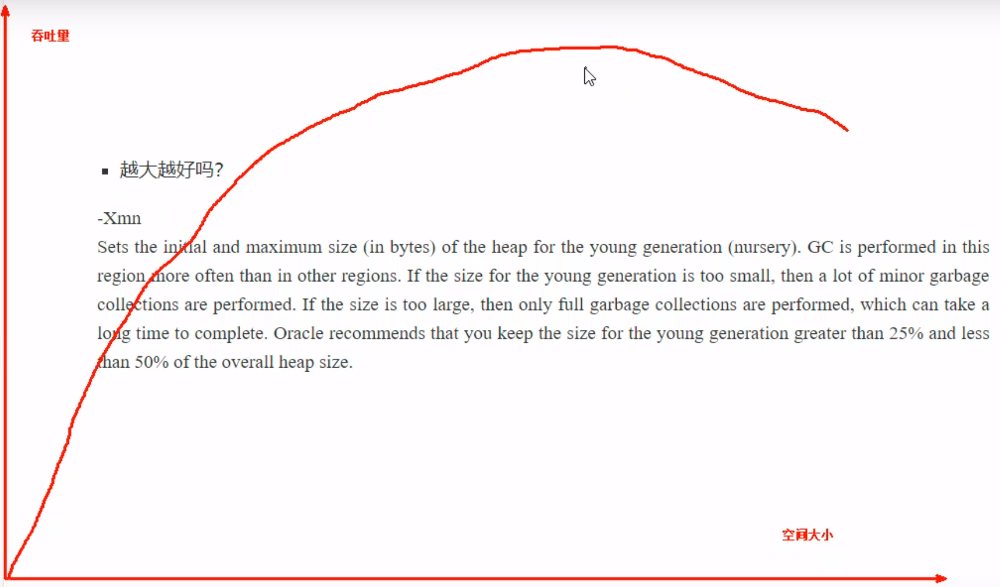
2.11.5老年代调优
以CMS为例
因为垃圾处理线程和用户的线程是并发的，当垃圾处理的时候，用户的线程还会产生垃圾（浮动垃圾），如果再次导致内存不足，就会导致并发失败。退化为Serial-old，串行的垃圾回收器，响应时间较长
先尝试不去调优，因为如果未发生Full-GC，则证明老年代的内存正常，可以尝试调优新生代
如果老年代发生了Full-GC，就去观察发生Full-GC的时候老年代的内存占用，将老年代的内存预设调大1/4-1/3
- -XX:CMSInitiatingOccupancyFraction=percent【75%-80%】
2.11.6调优案例
案例一
现象：FullGC和MinorGC频繁
原因分析：业务高峰期的时候，大量的对象被创建，导致新生代空间不足，MinorGC频繁。对象的晋升阈值也随之降低，导致老年代中生存周期并不是很长的对象晋升，老年代就需要频繁地进行Full-GC
解决方案：尝试增加新生代内存，并增加幸存区晋升的阈值
案例二
现象：请求高峰期发生Full GC，单次暂停时间特别长（CMS）
重新标记的时候要扫描整个堆内存，耗时较多，可以在重新标记以前对新生代先做一次垃圾回收减少对象的数量，可以添加虚拟机参数：-XX:CMSScavengeBeforeRemark
案例三
老年代充裕的情况下，发生Full GC（CMS jdk1.7）
jdk1.8将元空间作为方法区的实现，jdk1.7将永久代作为方法区的实现，永久代空间的不足也会引起Full GC
2.11.7Java调优工具
javap：专门用于分析Class文件字节码的工具
1
2
3
4查看.class文件内容
javap -c xxx.class
javap -verbose xxx.class
-p # 显示私有的jps：查看本机java进程信息
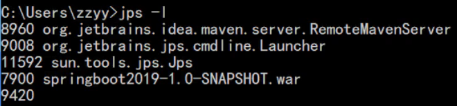
jstack 打印线程栈的信息，制作线程dump文件
jstat 性能监控工具
jconsole 简易的可视化控制台
jmap ：分析Java堆对象
1
2
3
4打印内存映射
-heap PID
制作堆dump文件
-dump:format=b,live,file=filename.bin PID
jhat：内存分析工具
jvisualvm：功能强大的控制台
- 垃圾回收后，内存占用依然很高
- 1.控制台输入jvistualvm，在1处选择对应进程，2处点“dump”。
- 2.点击“查找”，点击第一条占用内存最大的记录。
- 3.找到问题所在，list中有过多大对象student，无法被清除。
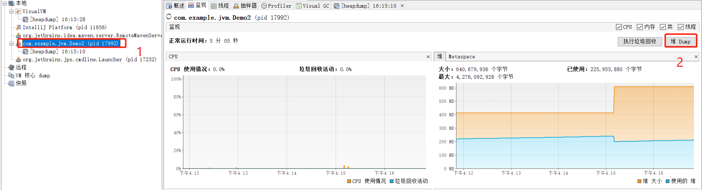
- 垃圾回收后，内存占用依然很高
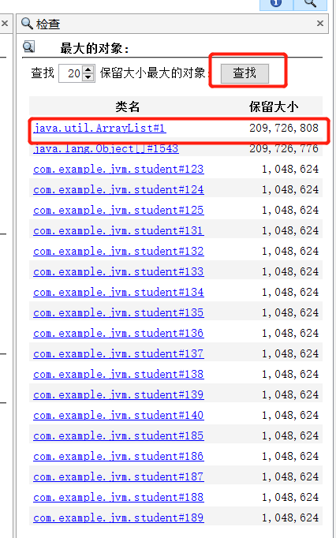
动态链接 & 静态链接
部分符号引用在类加载阶段(解析)的时候就转化为直接引用，这种转化为静态链接
部分符号引用在运行期间转化为直接引用,这种转化为动态链接
虚/非虚方法
- 非虚方法：在类加载阶段(解析时期)才会将符号引用解析直接引用的方法被称之为非虚方法
- 静态方法、私有方法、实例构造器、父类方法,这些只需要在类加载阶段就会确定
- 解析调用一定是一个静态过程
- 编译器可知，运行期不可变
- 虚方法:
- 在运行期间将符号引用转化为直接引用的方法被称之为虚方法
- 非虚方法：在类加载阶段(解析时期)才会将符号引用解析直接引用的方法被称之为非虚方法
分派
- 静态类型:编译期间确定的类型(Ocean)
- 实际类型:运行期间确定的类型(River)
1
2
3
4
5
6
7public class Ocean {
public static void main(String[] args) {
Ocean river = new River();
}
}
class River extends Ocean{
}左为静态类型，右为实际类型：Ocean river = new River();
宗量:方法的接受者（亦即方法的调用者）与方法的参数统称为方法的宗量
静态分派
1
2
3
4
5
6
7
8
9
10
11
12
13
14
15
16
17
18
19
20
21
22
23
24
25
26
27
28
29class Ocean {}
class River extends Ocean{}
class Lake extends Ocean{}
/**
静态分派
*/
public class StaticDispatch{
public void getSize(Ocean waterArea){
System.out.println("Ocean is the biggest!");
}
public void getSize(Lake waterArea){
System.out.println("Lake is bigger!");
}
public void getSize(River waterArea){
System.out.println("River is big...");
}
public static void main(String[] args) {
StaticDispatch dispatch = new StaticDispatch();
Ocean river = new River();
Ocean lake = new Lake();
dispatch.getSize(lake);
dispatch.getSize(river);
}
}控制台输出:
1
2Ocean is the biggest!
Ocean is the biggest!分析:
①定义了两个静态类型相同而实际类型却不同的变量
②重载时方法的执行依赖的是形参列表，而形参列表指的却是静态类型
③静态类型是在类加载(解析时期)就确定下来的
总结:静态分派可以解释重载
动态分派
1
2
3
4
5
6
7
8
9
10
11
12
13
14
15
16
17
18
19
20
21
22
23
24
25
26abstract class Human {
abstract void call();
}
class Father extends Human{
void call() {
System.out.println("I am the Father!");
}
}
class Mother extends Human{
void call() {
System.out.println("I am the Mother!");
}
}
public class DynamicDispatch {
public static void main(String[] args) {
Human father = new Father();
Human mother = new Mother();
father.call();
mother.call();
}
}控制台输出:
1
2I am the Father!
I am the Mother!程序执行过程的机器指令分析如下:
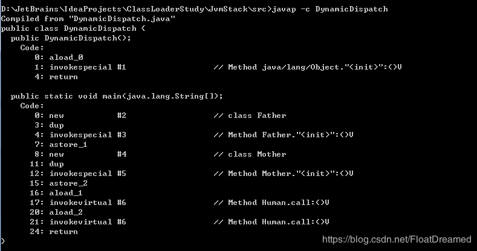
各操作指令解析:
0:在java堆中为变量father分配空间,并将地址压入操作数栈顶
3:复制操作数栈顶值.并压入栈顶(此时操作栈上有两个连续相同的father对象地址)
4:从操作栈顶弹出一个this的引用(即两个连续father对象地址中靠近栈顶的一个),并调用实例化方法:()v
7:将栈顶的仅剩的一个father对象地址存入第二个本地变量表slot(1)中
815:重复上面的操作,创建了mother对象并将其地址存入第三个本地变量表slot(2)中21:重复上面的操作,根据mother对象地址查询其call()并执行
16.将第二个本地变量表slot(1)中引用类型数据father地址推送至操作栈顶
17:调用虚方法,根据father对象地址查询其call()方法并执行
20
24:结束方法- 总结:从上面的invokevirtual可以知道方法call()的符号引用转换是在运行时期完成的,所以可以说动态分派解释了重载
单分派&多分派
- 单分派是指根据一个宗量就可以知道调用目标(即应该调用哪个方法)
- 多分派需要根据多个宗量才能确定调用目标
总结:
- Java中静态分派的方法调用，首先确定调用者的静态类型是什么，然后根据要调用的方法参数的静态类型(声明类型)确定所有重载方法中要调用哪一个，需要根据这两个宗量来编译，所以重写是静态多分派(多个宗量确定)
- Java中动态分派的方法调用，在运行期间，虚拟机会根据调用者的实际类型调用对应的方法，根据这一个宗量就可以确定要调用的方法,所以重载是动态单分派(一个宗量)
即 Java 语言是一门静态多分派（方法重载）、动态单分派（方法重写）的语言.
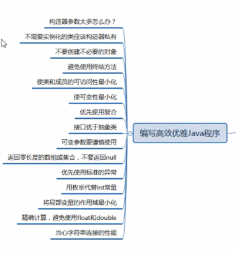
GC日记解读
如何对springboot调优
1 | java - server jvm的各种参数 -jar jar/war包名字 |
重排序
在执行程序时为了提高性能，编译器和处理器经常会对指令进行重排序。重排序分成三种类型：
- 编译器优化的重排序。编译器在不改变单线程程序语义放入前提下，可以重新安排语句的执行顺序。
- 指令级并行的重排序。现代处理器采用了指令级并行技术来将多条指令重叠执行。如果不存在数据依赖性，处理器可以改变语句对应机器指令的执行顺序。
- 内存系统的重排序。由于处理器使用缓存和读写缓冲区，这使得加载和存储操作看上去可能是在乱序执行。
从Java源代码到最终实际执行的指令序列，会经过下面三种重排序：
Q: Java 是否存在内存泄漏?
1 | 答：理论上Java因为有垃圾回收机制（GC）不会存在内存泄露问题（这也是Java被广泛使用于服务器端编程的一个重要原因）；然而在实际开发中，可能会存在无用但可达的对象，这些对象不能被GC回收，因此也会导致内存泄露的发生。例如Hibernate的Session（一级缓存）中的对象属于持久态，垃圾回收器是不会回收这些对象的，然而这些对象中可能存在无用的垃圾对象，如果不及时关闭（close）或清空（flush）一级缓存就可能导致内存泄露。下面例子中的代码也会导致内存泄露。 |
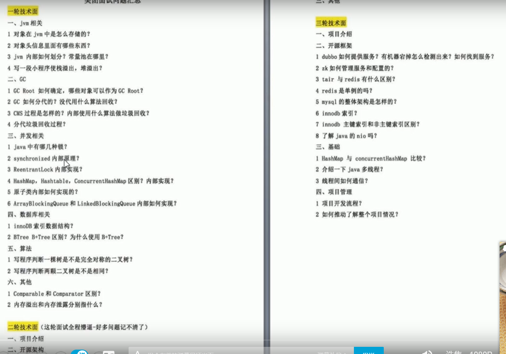
194.说一下 jvm 的主要组成部分？及其作用？
195.说一下 jvm 运行时数据区？
196.说一下堆栈的区别？
197.队列和栈是什么？有什么区别？
198.什么是双亲委派模型？
199.说一下类加载的执行过程？
200.怎么判断对象是否可以被回收？
201.java 中都有哪些引用类型？
202.说一下 jvm 有哪些垃圾回收算法？
203.说一下 jvm 有哪些垃圾回收器？
204.详细介绍一下 CMS 垃圾回收器？
205.新生代垃圾回收器和老生代垃圾回收器都有哪些？有什么区别？
206.简述分代垃圾回收器是怎么工作的？
207.说一下 jvm 调优的工具？
原文作者: 掘金木匠
原文链接: http://goldcarpenter.github.io/2019/07/13/JVM_Part2/
版权声明: 转载请注明出处(必须保留作者署名及链接)